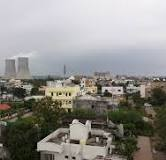

Chandrapur
Nickname-Black Gold City
Chandrapur (earlier known as Chanda, the official name until 1964) is a city and a municipal corporation in Chandrapur district, Maharashtra state, India. It is the district headquarters of Chandrapur district. Chandrapur is a fort city founded by Khandkya Ballal Shah, a Gond king of the 13th century. The city sits at the confluence of theErai river and Zarpat river. The area around the city is rich in coal seams. Hence, Chandrapur is also known as the"Black Gold City" .
The local people relate the name "Chandrapur" to the words Chandra (the moon) and pur (a settlement) after a legend. Scholars see the name as a derivative of "Indupur" (city of the moon) which stood near the Jharpat in the Treta Yuga.
Famous Places in Chandrapur
Tadoba Wildlife Sanctuary


The Tadoba Andhari Tiger Reserve is located approximately 30030 km north of Chandrapur near the Erai dam. This park was included in the project tiger since 1973. The total area of the reserve is 625.40 km2. In 2014 the tiger population in Tadoba was 66, that number has gone up to 86. Tadoba is now a home to 86 Tigers despite years of lynching, poaching & other threats. There are many hotels and resorts near Moharli gate, Zari gate and Navegaon gate of the reserve, available for the tourists. The guided tours inside the park are available during early morning and evening time only.
Mahakali Temple


Mahakali Mandir (temple) is an often frequented temple in Chandrapur. The ancient temple was built by Dhundya Ram Sah, of Gond Dynasty around the 16th century. Tuesdays are a particularly significant day to visit. Within the mandir there is a small Ganesh temple and a Hanuman temple. At the two temple entrances, there are small shops for puja (worship) supplies such as coconut, flowers and cloth. Items for home décor and puja décor are sold near the temple. Near the rear entrance there is a Shani temple.
Anchaleshwar Mandir

The Anchaleshwar Mandir celebrates a form of the Lord Siva. It is situated adjoining Anchaleshwar Gate of Chandrapur fort on the banks of the Zarpat river. The official samadhi (mausoleum) of the Gond kings is located within the temple complex.